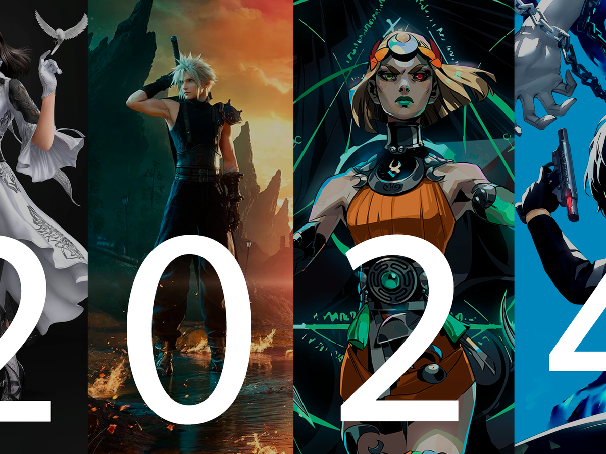
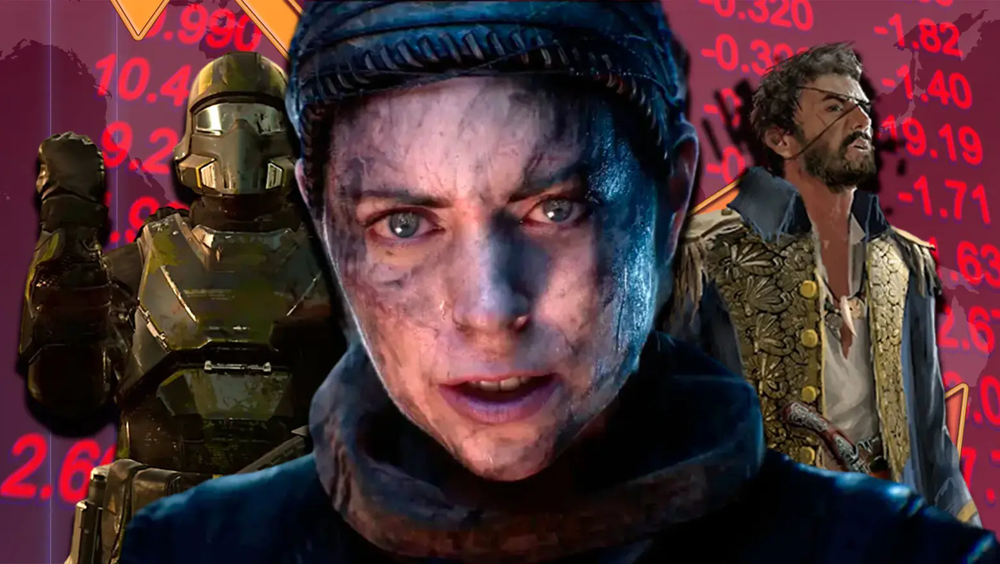
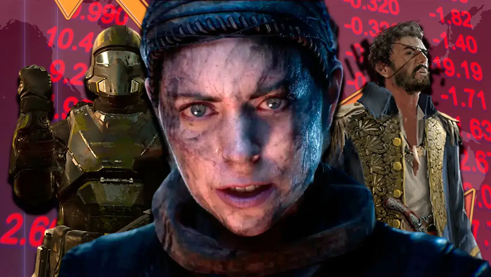

Noticias

Los mejores lanzamientos de enero hasta agosto del
2024.
En el siguiente articulo encontraras los mejores juegos en lo que va del año.
 Proximos lanzamientos en septiembre del 2024
Revisa aqui los lanzamientos que tiene septiembre para PC, Xbox series y PS5.

Los mayores fracasos del 2024
Echemos un vistazo a los juegos que mas nos decepcionaron y los que causaron perdidas millonarias.
Proximos lanzamientos en septiembre del 2024
Revisa aqui los lanzamientos que tiene septiembre para PC, Xbox series y PS5.

Los mayores fracasos del 2024
Echemos un vistazo a los juegos que mas nos decepcionaron y los que causaron perdidas millonarias.